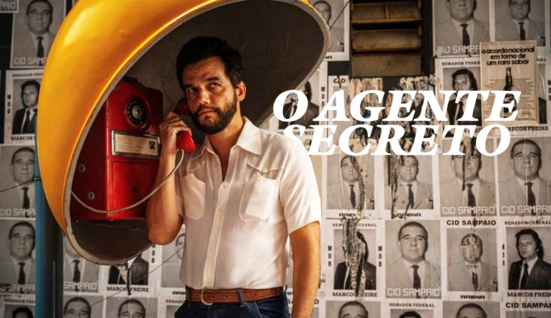
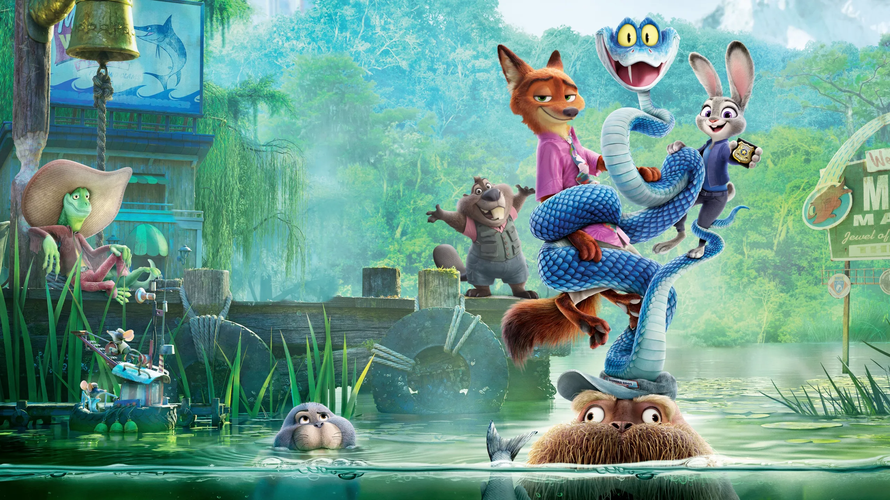

O Agente Secreto
O filme agente secreto é o grande fenômeno recente do cinema brasileiro, tendo recolocado o país no centro das atenções de Hollywood após fazer história no Globo de Ouro e receber quatro indicações ao Oscar 2026. O filme acompanha Marcelo, um professor universitário e pesquisador que vive no tempo da ditadura que foge de São Paulo após irritar um poderoso industrial. Ele viaja para Recife, buscando refúgio para poder buscar seu filho e deixar o país. No entanto, a capital pernambucana era um ambiente de forte vigilância, onde ele descobre estar jurado de morte e sob a mira de matadores de aluguel contratados por seus inimigos.
Dele & Dela
Dele & Dela é uma minissérie de suspense. A história gira em torno de um assassinato brutal de pequena cidade na Geórgia, e é investigada por dois protagonistas que possuem um passado turbulento e segredos obscuros.

Demon Slayer: Kimetsu no Yaiba
Demon Slayer: Kimetsu no Yaiba acompanha a jornada de Tanjiro Kamado, um jovem que se torna um caçador de demônios após sua família ser massacrada por Muzan Kibutsuji, o primeiro e mais poderoso demônio. Seu objetivo é vingar sua família e encontrar uma cura para sua irmã, que sobreviveu ao ataque, mas foi transformada em um demônio.
O Diabo Veste Prada 2
Duas décadas depois, o império impresso da implacável Miranda Priestly na revista Runway está afundando devido à crise do mercado editorial e à ascensão do meio digital. Para salvar seu legado, Miranda se vê forçada a negociar e bater de frente com sua ex-assistente, Emily Charlton, que agora é uma poderosa executiva de um grande grupo de luxo. Enquanto isso, Andy Sachs retorna como uma jornalista influente, ficando no centro dessa disputa de poder e egos.
Aprendendo a Lição
Este suspense médico sul-coreano acompanha um grupo de jovens médicos de elite que precisam cumprir o serviço militar obrigatório em áreas isoladas. A história foca em um talentoso cirurgião plástico que é enviado para trabalhar no posto de saúde de uma ilha remota chamada Pyeondong-do. Assim que chega, ele se depara com uma sequência de eventos bizarros, perigosos e misteriosos que envolvem a comunidade local, transformando sua rotina em um teste de sobrevivência.

Zootopia 2
A rotina muda quando eles descobrem pistas de Gary, uma misteriosa e venenosa víbora. Essa espécie de réptil não era vista na metrópole há um século. Para investigar o caso, Judy e Nick se disfarçam e exploram novos distritos, como o Mercado do Pântano. Lá, eles desenterram uma antiga conspiração sobre o passado sombrio da fundação de Zootopia e a marginalização dos répteis.